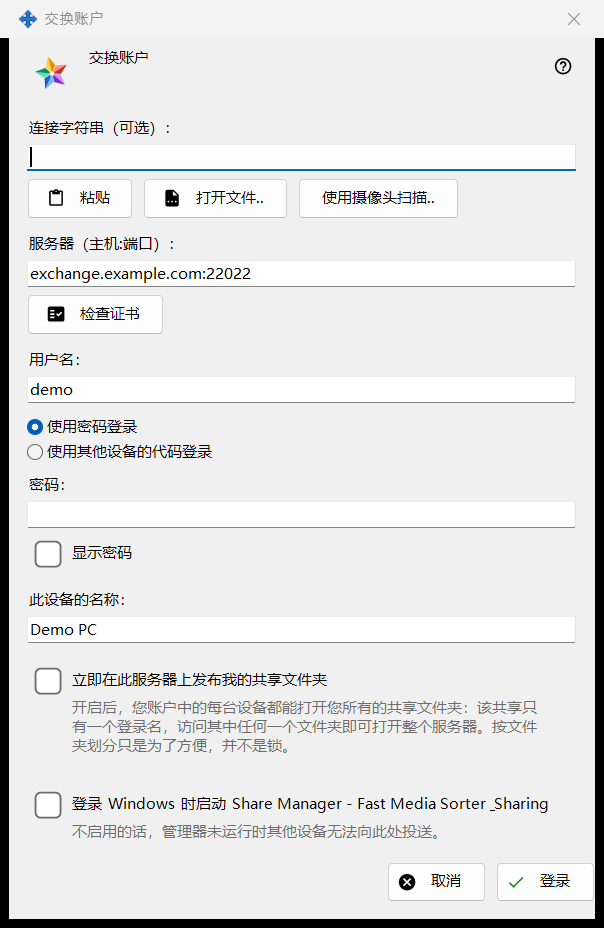
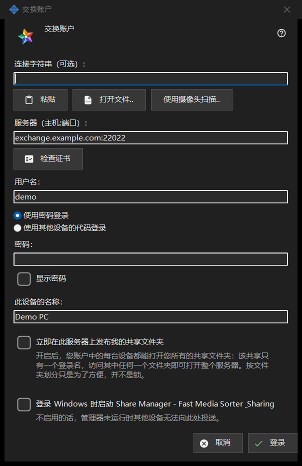

交换账户
用途说明
将这台电脑作为某个账户的设备登录到 Media Exchange Server。从 Share Manager 设置中「交换账户」页面的「登录..」按钮打开，也可从「通过交换服务器发布..」打开，此时发布选项已被预先勾选。


操作顺序
- 可选：粘贴、打开或扫描连接字符串，它会填入服务器和用户名。
- 点击「检查证书」；除非系统信任该证书或字符串已包含它，否则请将指纹与运营者提供的指纹比对，然后点击「信任此证书」。
- 输入用户名以及密码或配对码。
- 设置设备名称和选项。
- 点击「登录」。
界面元素
连接字符串
「连接字符串（可选）：」接受通过「粘贴」粘贴的字符串、通过「打开文件..」从 .fmsexch 文件或 QR 图片载入的字符串，或通过「使用摄像头扫描..」读取的字符串。它只会填入服务器和用户名；在点击「登录」之前不会连接任何内容。带有指纹的字符串会固定该证书，因此无需手动比对。带有邀请的字符串会把窗口切换为注册。无法使用的字符串会得到一行拒绝提示。
服务器与证书
「检查证书」连接到「服务器（主机:端口）：」并显示「服务器证书的指纹：」。如果系统信任该证书，则无需固定。否则请将指纹与服务器运营者提供的指纹比对，再点击「信任此证书」；只有这个按钮才会接受系统不认识的证书。更改服务器文本会清除检查结果。在没有受信任的证书之前，按 Enter 不会有任何反应，因此密码不会发送到没有人担保的服务器。
用户名、密码与配对码
输入「用户名：」，然后选择「使用密码登录」（「密码：」，附带「显示密码」）或「使用其他设备的代码登录」（「配对码：」，由同一账户的另一台设备签发）。无论结果如何，字段中的值在发送的瞬间就会被清除；设备只保存令牌，从不保存密码。
凭邀请注册
当字符串带有邀请时，两种登录方式被注册取代：「账户密码：」和「再次输入密码：」设置新密码，新密码必须符合所显示的规则（至少 10 个字符，含一个大写和一个小写拉丁字母以及一个数字），按钮显示为「创建账户」。
设备名称与选项
「此设备的名称：」（最多 64 个字符）默认为计算机名。「立即在此服务器上发布我的共享文件夹」默认关闭，除非您是通过「通过交换服务器发布..」进入的；开启后，您账户的每台设备都可以打开您所有的共享文件夹，因为共享只有一个用户名。最后一个选项会在您登录 Windows 时启动 Share Manager（默认关闭），这样其他设备就可以向这台电脑投送广播。
一次只能连接一台服务器
一台设备只属于一个服务器。登录另一个服务器时会询问是否离开当前服务器，旧服务器上的发布随之停止。联系失败后，「为什么连不上？..」按钮会打开连接测试。